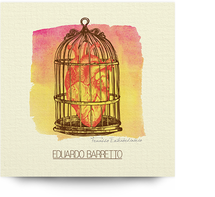

Talvez você esteja perto
e eu deva fingir que me arrependi
quem sabe até pedir desculpas
mesmo que no fundo eu saiba que
estava loucamente certo
às vezes é preciso intervir
deixar de lado a elegância
mesmo que o estrago seja grande
em um instante
não saiba mais o que estou fazendo
(ou porquê)
e como um bárbaro
barbarizando
com um sorriso de satisfação
Vou confessar
quando acendem meu pavio
é melhor pular no mar
caso esteja em um navio
Talvez eu deva ser discreto
e simplesmente me distanciar
deixar de lado a implicância
ao menos uma vez me controlar
infelizmente não dá certo
quando alguém insiste em transbordar
se uma gota me alcança
eu sei que o estrago vai ser grande
apavorante
não sei mais o que eu estou quebrando
(ou porquê)
e como um bárbaro
barbarizando
com um sorriso de satisfação
Vou confessar
quando acendem meu pavio
é melhor pular no mar
caso esteja em um navio
Pense em mim
como uma bala de canhão
causa estrago
mesmo sem ter direção
A partir da retina
ele atravessa o canal óptico
e entra no crânio
Não penso em nada
enquanto fico aqui parado
perdi o jeito com pessoas
sou um fracasso extraordinário
e nada mais me interessa
Lembro que um dia
eu estive por aí
não posso mais
o sol não toca o meu rosto
Mal posso sustentar
o peso do meu corpo
já desisti dessa ideia
sou um fracasso extraordinário
pra nada mais eu tenho pressa
Lembro que um dia
eu estive por aí
não posso
o sol não toca o meu rosto
Não penso mais nas coisas
que eu não posso mudar
esqueço o caminho
pra não precisar voltar
perdi a mão nas coisas
que envolvem a razão
tentando ocultar o que eu tenho
dentro da cabeça
Vou tentar fazer como prometi
só dessa vez
meu bem
manter os pés no chão
e evitar a velha extravagância
É difícil para mim
não consigo evitar
eu sei
seguro a sua mão e grito delirante
num permanente e infinito frenesi
Vou falar algo doce
antes de te constranger
meu bem
sou como um balão de gás
se me soltar eu voo para longe
É difícil para mim
não consigo evitar
eu sei
seguro a sua mão
e grito delirante
num permanente e infinito frenesi
Pense bem se quer entrar
no último vagão
o trem não vai esperar
algo perturbante
prestes a se revelar
meu bem
não vou com você
Tento evitar os trilhos
que levam a um lugar
que eu não quero estar
todos buscam loucamente
alguém que lhes complete
enquanto eu
quero ficar só
Folhas flutuantes
vem em minha direção
o frio me faz refletir
solto a sua mão
e sigo sem me despedir
meu bem
não me queira mal
Tento evitar os trilhos
que levam a um lugar
que eu não quero estar
todos buscam loucamente
alguém que lhes complete
enquanto eu
quero ficar só
Fracasso Extraordinário | EP (2015)
Todos os instrumentos gravados por Eduardo Barretto, exceto bateria, por Ricardo Cifas.
Produzido por Filipe Consolini.
Lançado em agosto de 2014.
Mono.Tune Records
{kind=link}